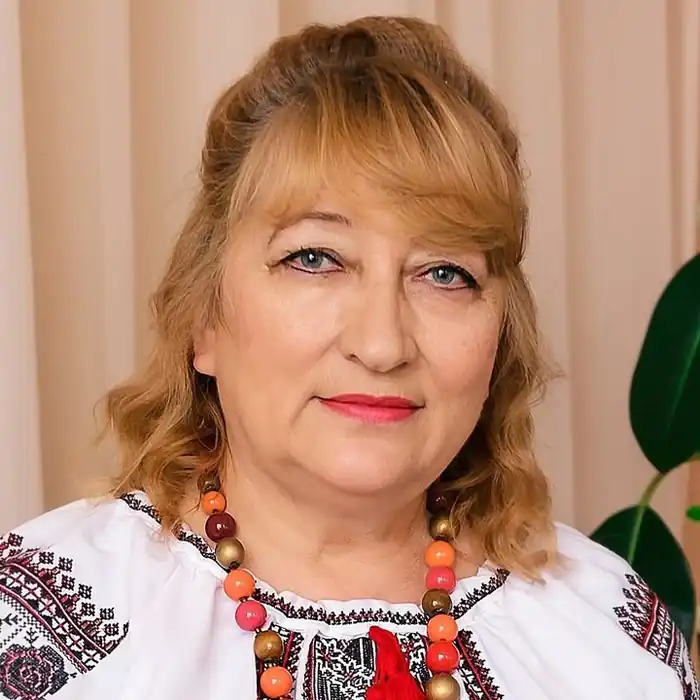

Світлана Олегівна Талан (народилася 7 березня 1960 в селі Слоут Глухівського району на Сумщині) — українська письменниця, авторка романів в жанрі "реальних історій".
У 1975 році закінчила восьмирічну школу в селі Перемога Глухівського району Сумської області. Продовжила навчання у Баницькій середній школі.
У 1983 році закінчила Глухівський педагогічний інститут. Народилася в родині сільських вчителів. З п'ятнадцяти років почала працювати позаштатним кореспондентом районної газети. Згодом працювала вихователем у дитсадку, пізніше — учителем початкових класів. У 1989 році перебралася жити до східної України й відтоді живе у Сєвєродонецьку, Луганської області. У шлюбі, одружена з 26 вересня 2006 року. Світлана Талан пише романи у жанрі "реальні історії", які їй підказує саме життя. Усі твори на гостросоціальну тематику, незмінним залишається одне: головна героїня її книжок — жінка-українка, сильна духом, зворушлива, ніжна, чуттєва, яка іноді помиляється, але її завжди веде за собою кохання: до чоловіка, до дітей, до батьківщини. У 2011 році її роман "Щастя тим, хто йде далі" став лауреатом на конкурсі "Коронація слова 2011" та отримав відзнаку від фонду Олени Пінчук Анти-СНІД "За найкращий роман на гостросоціальну тематику". На початку 2012 року роман був виданий під назвою "Коли ти поруч" у видавництві "Клуб сімейного дозвілля" українською та в авторському перекладі російською мовами і за рік був проданий рекордний наклад: 80 тисяч примірників. За версією журналу "Фокус" та рахункової палати автор увійшла у трійку найпопулярніших письменників України. У 2012 році роман автора "Не вурдалаки" також був відзначений на Міжнародному конкурсі "Коронація слова 2012" і в 2013 році був виданий українською та російською мовами у видавництві КСД. Її роман "Мої любі зрадники" був виданий видавництвом "Навчальна книга "Богдан" (м. Тернопіль). Твір автора "Без минулого" (рос. "Без прошлого") вийшов у Канаді російською мовою (2013). Роман "Розколоте небо" здобув спеціальну відзнаку "Вибір видавця" в конкурсі "Коронація слова 2014".